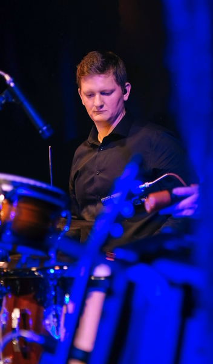

Get ready for a diverse setlist that will make you sway, dance and maybe even headbang by the end of the night!
Little Mischief is a Placer County Foothills based rock, soul, blues and Americana project fronted by Michael Baker Jr. (Vocals/Guitar/Songwriter) and backed by Zach Frese (Bass/Vocals), Ben Parker (Drums) and Matthew Grayum (Percussion).
The group shares an affinity for live electric music, and when combined with Ben and Matt's extensive background in both jazz and african style drumming, produces a sound that feeds the soul and moves the hips.
While Little Mischief has only performed together formally since August of 2022, the roots of this group’s musical chemistry are embedded in the many nights spent jamming together around campfires and in hazy studios over the past decade.
Michael and Zach are no strangers to sharing a stage together, either. Their previous project, GEM, ran from 2019-2022 and graced venues including The Green Room Social Club, Old Ironsides, The Starlet Room and The Russ Room, while sharing the stage with festival touring artists including “Boot Juice”, “Joe Craven and the Sometimers” and “The Brothers Comatose”.